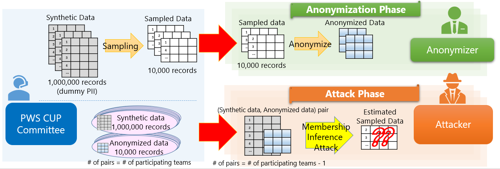

PWS Cup 2020

What' new
- 2020/02/18 (Tue): This page was created
- 2020/07/29 (Wed): Contest overview was added
- 2020/08/07 (Fri): Contest entry started.
- Please read the Participation Rules and fill out the entry form.
- 2020/08/19 (Wed): We will hold PWS Cup 2020 rule briefing
session (2020/08/26 (Wed) 17:00-19:00 JST @WebEX) )
- Please check the "PWS Cup 2020 Schedule" below
- 2020/08/26 (Wed): PWS Cup 2020 rule briefing session was
held.
- Details of the rules is here(English version)
- 2020/08/27 (Thu): Preliminary-anonymization Phase starts.
(~2020/09/07(Mon) 23:59:59 JST).
- Please check an email (Subject: "[PWSCUP2020] Your team accout").
- 2020/09/04 (Fri): Details of the rules
Ver.2 (in JP) (English version is opened at 2020/09/05).
- Change log is here (in JP). (English version is opened at 2020/09/05).
PWS Cup 2020 "AMIC" rule (overview) (WIP)
We will hold the AMIC ("Anonymity against Membership Inference" Contest). Details of the rules will be published at a later date.
Details of the rules is here. 
- Contest Flow
- The Committee generates Synthetic Data for each participating team. The Committee then generates Sampled Data by extracting records from the Synthetic Data with the sampling ratio of 10%. The Synthetic Data is distributed to the participating teams.
- Each team (as an Anonymizer) processes their Sampled Data and generates Anonymized Data. The Anonymizer then submits their Anonymized Data to the Committee. The submitted Anonymized data must fulfill the data utility requirements designated by the Committee, or the team will be disqualified.
- Each team (as an Attacker) receives pairs of (Synthetic Data, Anonymized Data) of all Anonymizers other than themselves. From the Anonymized Data, the Attacker estimates the Sampled Data.
- Evaluation
- Anonymizer Phase: the total number of records successfully estimated by Attackers is deducted from the Anonymizer's point. The Anonymizer with the highest points will be a winner of the anonymization phase.
- Attacker Phase: the Attacker who successfully estimated the most records in Sampled Data submitted by the Anonymize phase winner will be a winner of the attack phase.
- Determination of Final Ranking
- There will be two rounds in this contest: the preliminary and final round. Each round has distribution, anonymization, and attack phases.
- The results of the scoring in both rounds will be used to determine the final rankings.
Organizer
PWS Committee (in the Computer Security Special Interest Group of the Information Processing Society of Japan)
PWS Cup 2020 Schedule
The schedule is subject to change without notice.
- 2020/08/07 (Fri) - 2020/08/26 (Wed): Entries accepted
- 2020/08/26 (Wed): Rules published
- 2020/08/27 (Thu) - 2020/09/18 (Fri): Preliminary Round
- 2020/09/24 (Thu) - 2020/10/20 (Tue): Final Round
- 2020/10/27 (Tue): Final results announced at CSS2020
- 2020/10/27 (Tue): Poster session
参加チーム
| Team | Comment | Leader | Affiliation |
| Brown DP | - | - | |
| 鋼鉄の錬金術師 | 今年も錬金します。 | 中川拓麻 | 日鉄ソリューションズ株式会社 |
| Yichi | Ruska | - | |
| 小熊軟糖🧸 | - | - | |
| たけのこ半島 | 頑張ります | - | - |
| JOSE2 | がんばります | - | 三菱電機株式会社 |
| サイコロ | - | - | |
| SynIPA | Alexandre Roy-Gaumond | UQAM | |
| ホンワカインコ | ほんわか楽しみたいと思います | - | - |
| 🍎🍎🍎 | がんばります | 北島祥伍 | 株式会社ミクシィ |
| ステテコ大木 | 🥺 | 菅沼弥生 | 静岡大学大木研究室 |
| ステテコ西垣 | 明治大には負けません！ | 北川沢水 | 静岡大学西垣研究室 |
| ステテコ菊池 | 静岡大には負けません | 伊藤聡志 | 明治大学大学院 |
| 匿工野郎Aチーム | - | - | |
| 天然水 | 精一杯がんばります！ | 石原詢大 | 筑波大学 |
| docomo freshers | 楽しみます | 片山源太郎 | - |
| wakanalie | - | - | |
| 初ぼっち | ぼっちなので何もできないかもしれません。 | - | - |
| テレぼっち | テレワークなので、例年よりぼっち度をアゲてがんばります！ | 井口誠 | Kii株式会社 |
How to register
- Check the Entry page
Privacy Policy
- Check PWS Cup 2020 Privacy Policy.
Contact
- PWS2020 Committee, PWS Cup Working Group
- pwscup2020-info(at)iwsec.org